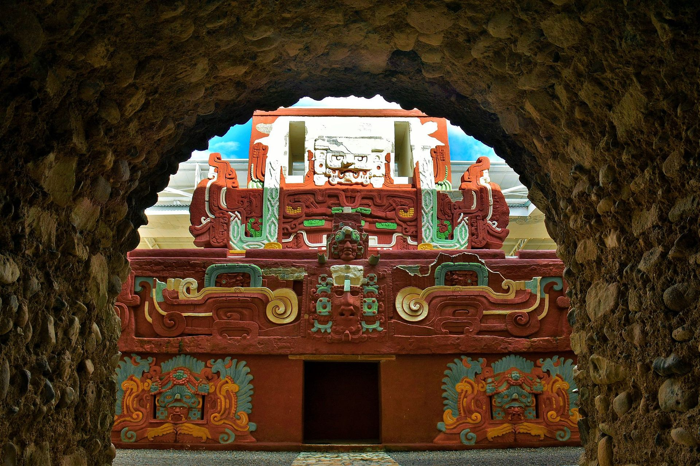
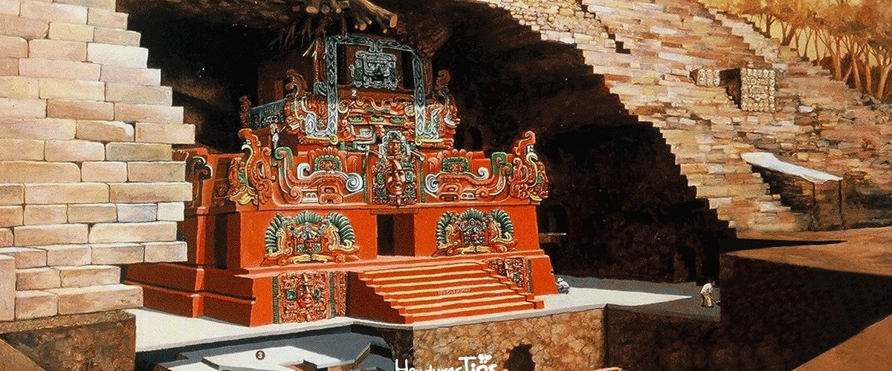

El Templo Rosalila, descubierto intacto en 1989 por el arqueólogo hondureño Ricardo Agurcia Fasquelle, representa uno de los hitos más deslumbrantes de la arqueología maya a nivel mundial. Esta joya arquitectónica fue edificada en el año 571 d.C. bajo el encargo del décimo gobernante de Copán, conocido como Luna Jaguar, para servir como un santuario religioso de adoración y un monumento de veneración al primer rey y fundador de la dinastía, K'inich Yax K'uk' Mo'. A diferencia de la práctica común en la que los edificios antiguos eran demolidos sistemáticamente para levantar nuevas plataformas encima, los mayas de Copán consideraron a Rosalila un templo tan sagrado que decidieron "enterrarlo" con extremo cuidado. El edificio fue envuelto en un manto de mortero blanco y rellenado minuciosamente con tierra y piedra, lo que sirvió como el núcleo estructural de la colosal Pirámide 16 y permitió que la edificación sobreviviera al paso de los siglos intacta.
